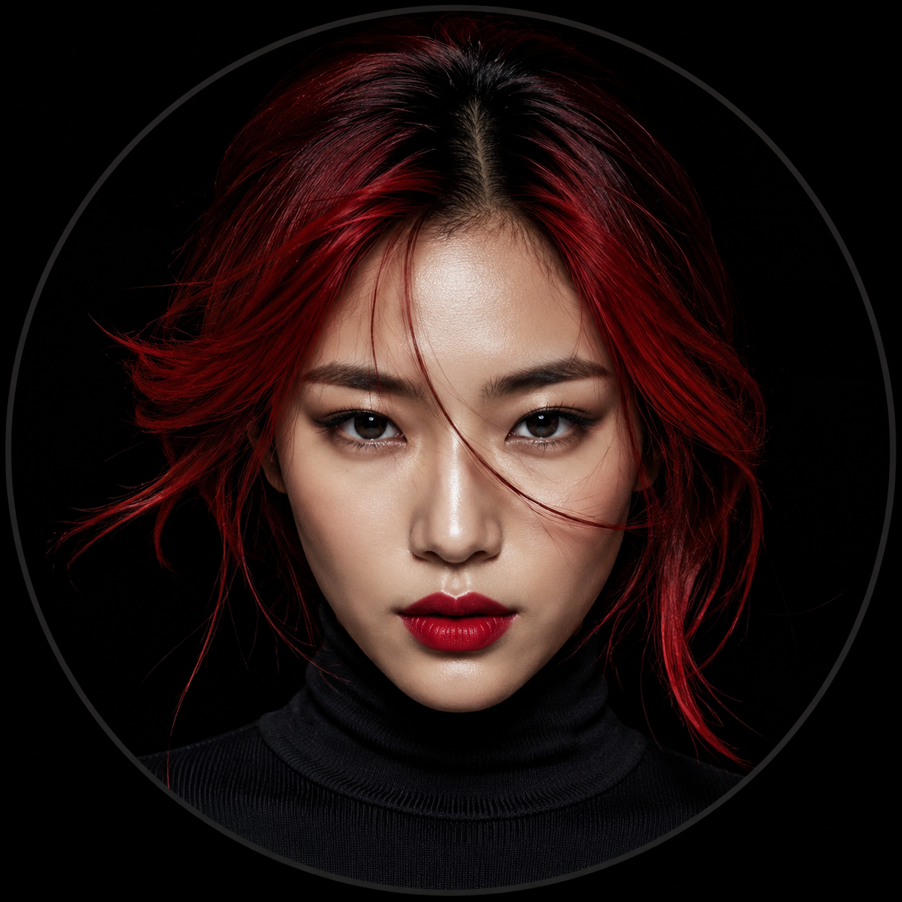
Model Name
Professional model based in Seoul. Specializing in editorial, runway, and brand campaigns.
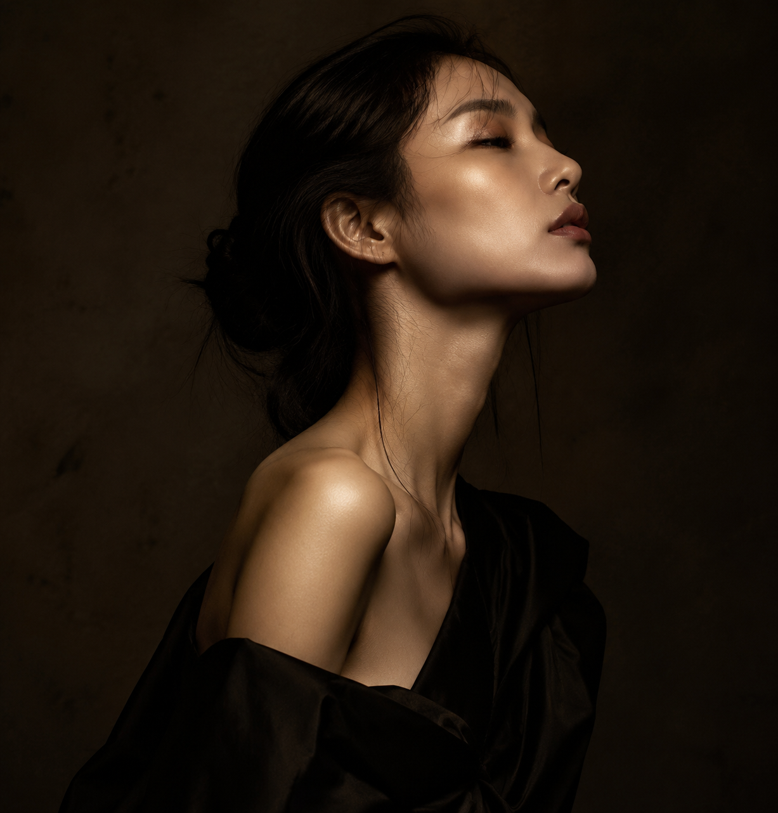
About Me
Passion & Style
With over 8 years in the fashion industry, I bring a unique blend of editorial sophistication and commercial versatility to every project.
My work has been featured in Vogue Korea, Harper's Bazaar, W Magazine, and campaigns for global luxury brands.
176
Height (cm)
82-60-88
Measurements
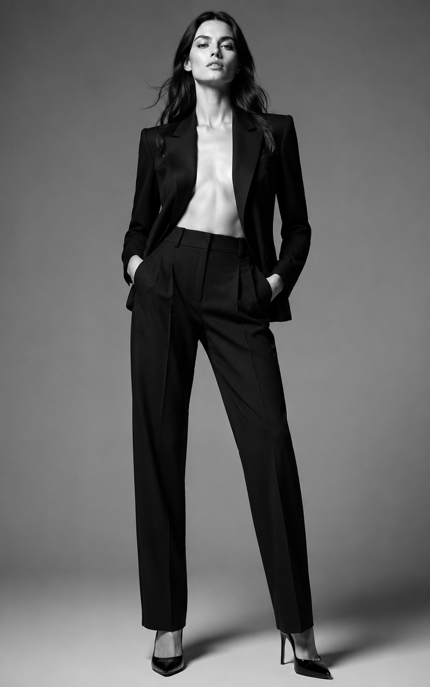
I'm a Model
Body Measurements
Height: 176 cm
Bust: 82 / Waist: 60 / Hip: 88
Shoe: 250 / Hair: Black
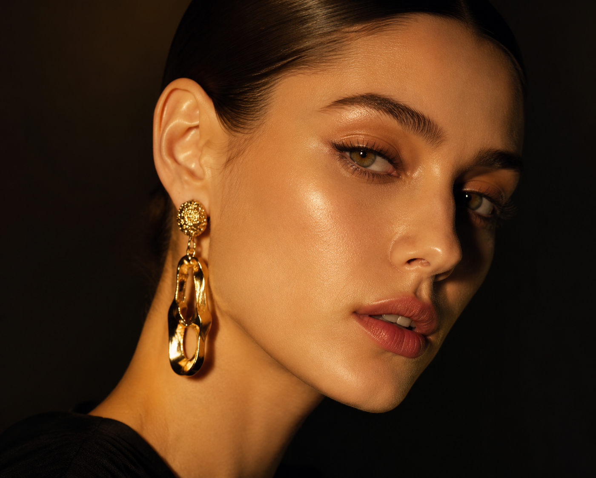
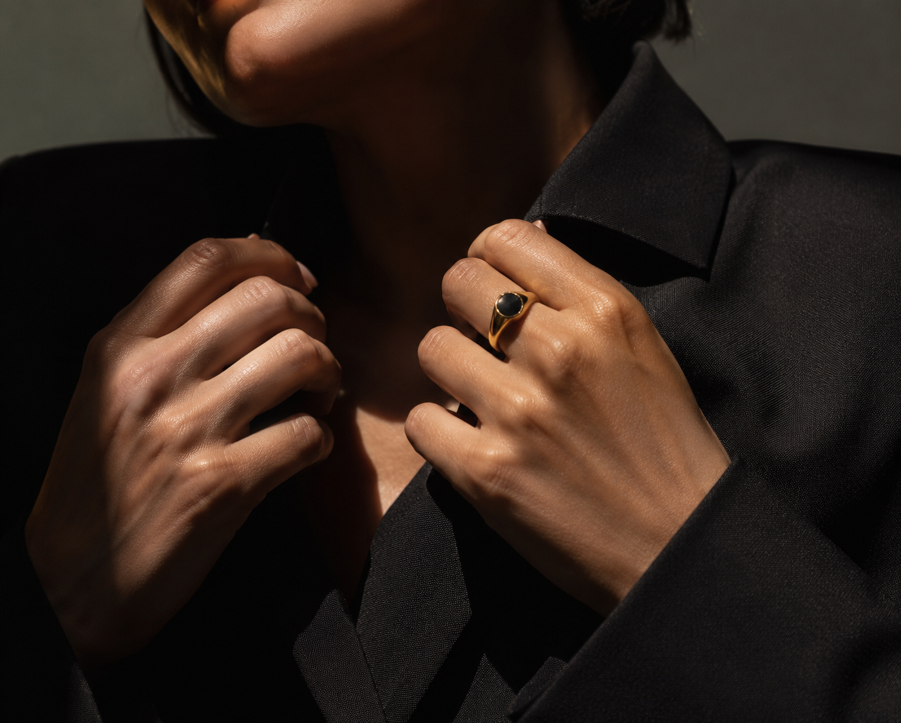
Editorial
V Magazine
Cover story for V Magazine's Spring issue. A bold exploration of deconstructed tailoring and avant-garde silhouettes.
Spring 2026 · Photographed by Tim Walker
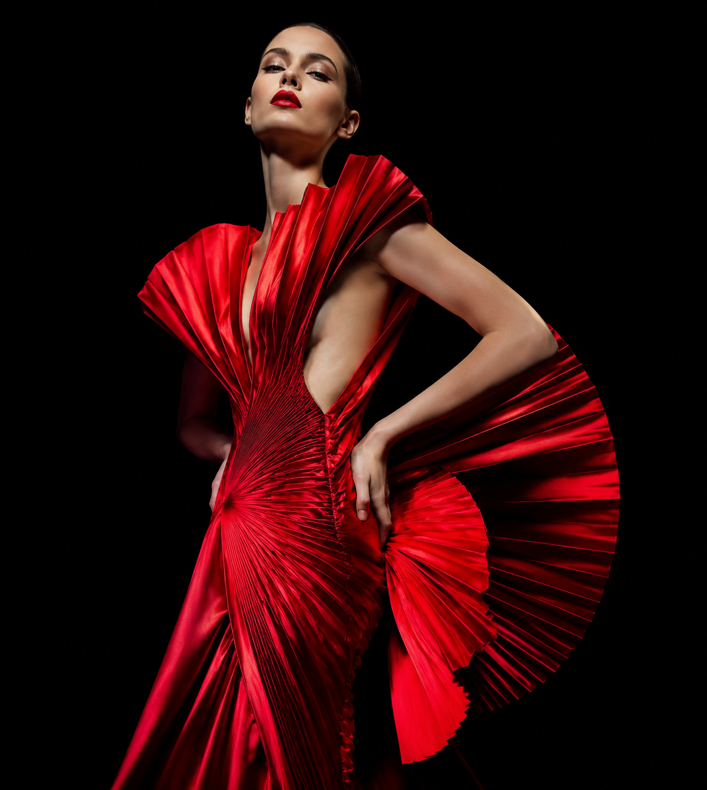
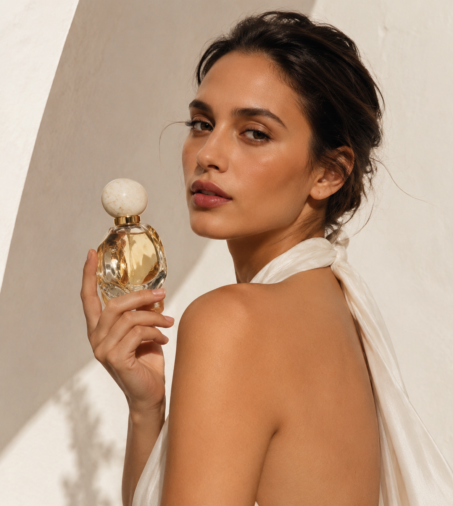
Campaign
Tamburins Perfume
Brand campaign for Tamburins' new fragrance collection. Blending minimalist aesthetics with sensory storytelling.
2026 · Art Direction by Studio Fragment
Eyewear
Gentle Monster
Lookbook for Gentle Monster's limited capsule collection. Futuristic frames meet editorial storytelling.
SS26 · Seoul & Tokyo
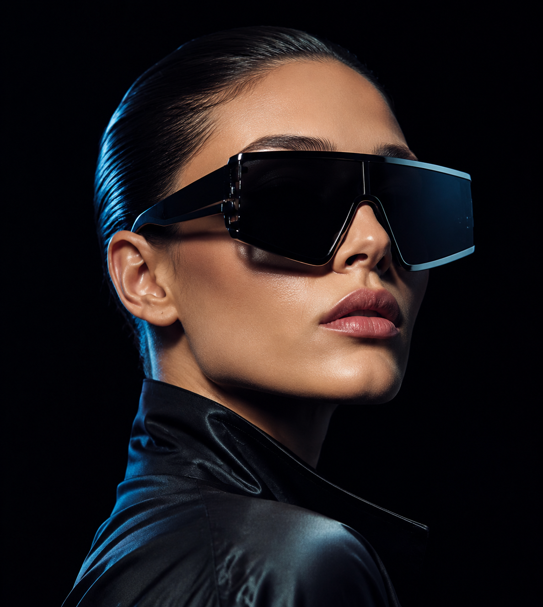
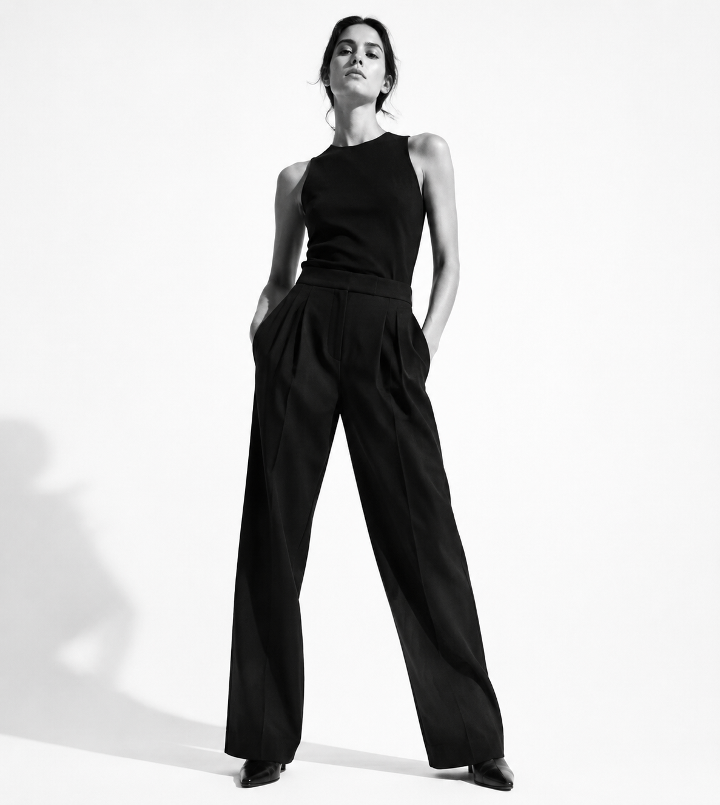
Campaign
Calvin Klein
Global campaign for Calvin Klein's iconic underwear line. Raw, minimal, powerful — celebrating the human form.
FW25 · Photographed by Mario Sorrenti
Get in Touch
Let's work
Email: hello@modelname.com
Agency: WME / IMG Models
Instagram: @modelname
leishifu-fashion-editorial · v2.0 · 2026
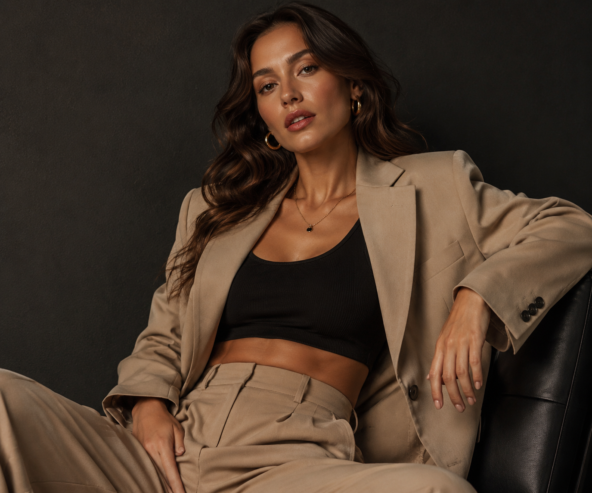
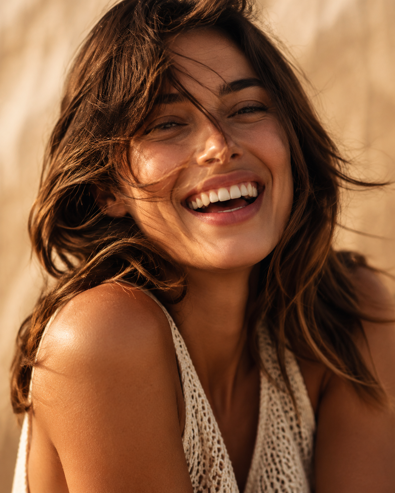
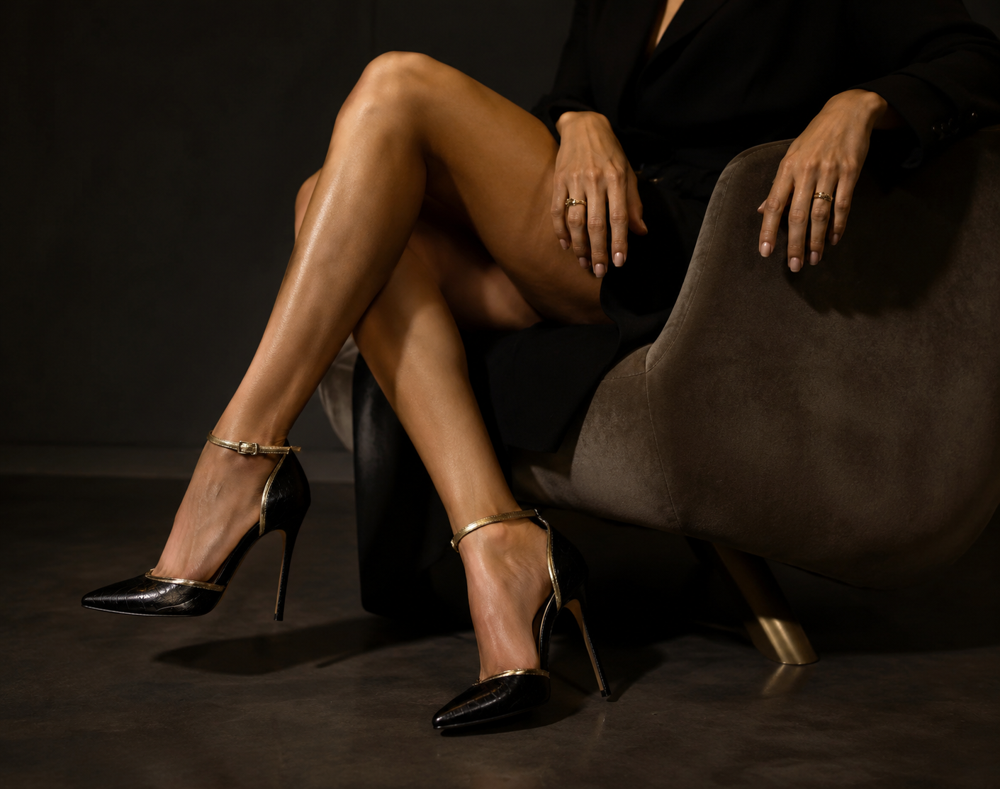